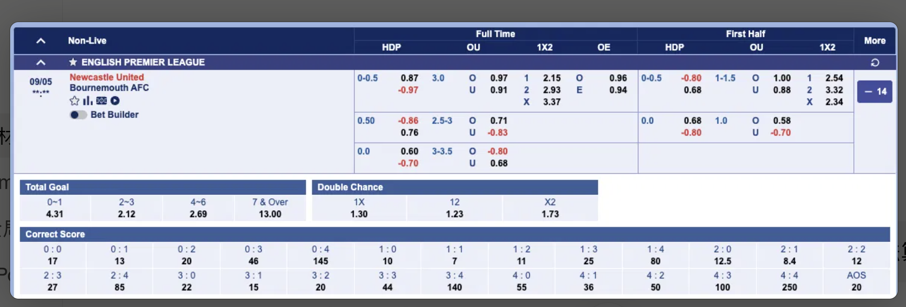

1. Introduction
A series of self-checking exercises that shows how raw match data can be transformed into betting probabilities and odds, one market at a time.
What we're aiming to build
By the end, you'll understand how match data can be converted into score probabilities, market probabilities, and finally betting odds.

How the exercises are organized
- 2. How To Generate Final Score Probability Matrix — from a 10-match history to a Home × Away scoreline probability matrix, the foundation every market below is priced from.
- 3. Odds For Different Market Type — pricing every market off that same matrix (Fair Probability → Euro → HK → Malay).
- 4. Opening Market — how a bookmaker actually sets the line it quotes.
- 5. Relationship between Poisson and Probability — the historical-frequency approach from section 2, compared against a Poisson model.